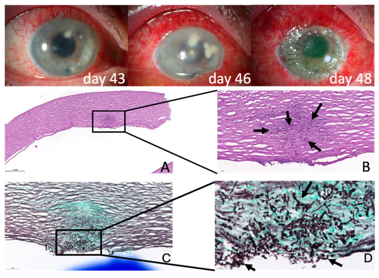
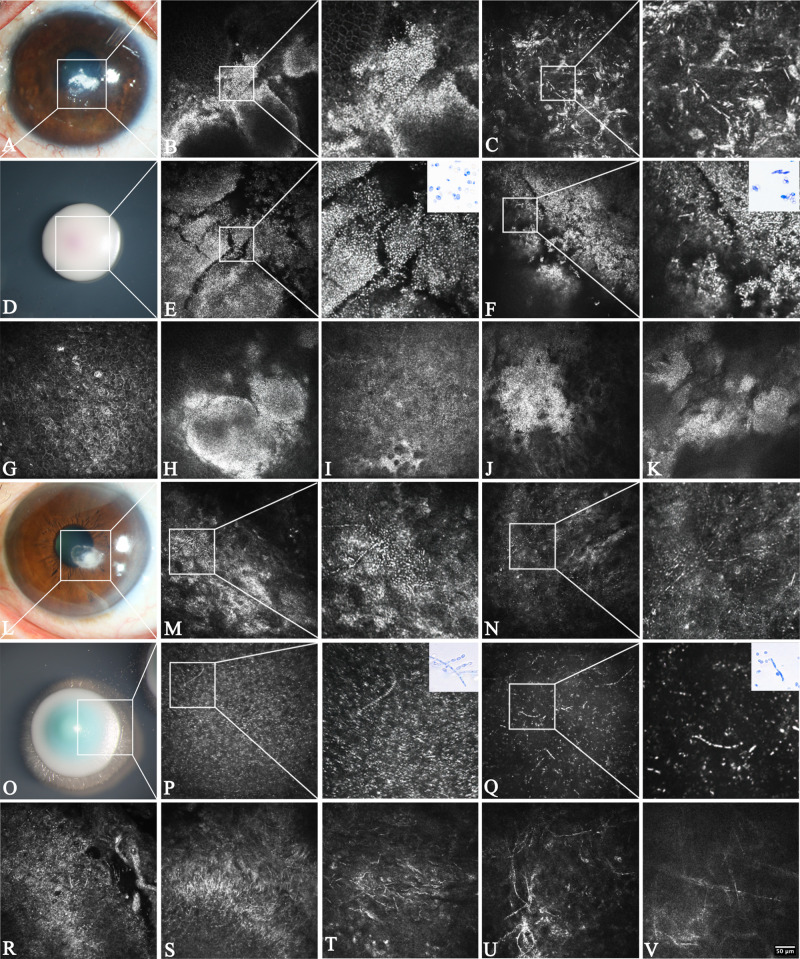
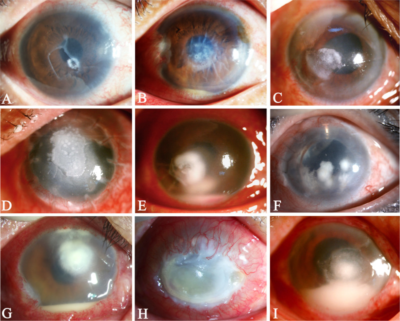
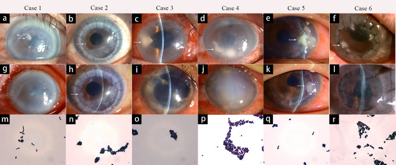
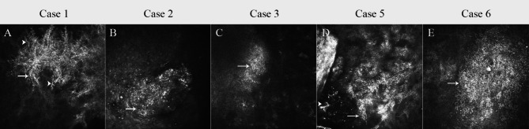

3220 — Viêm giác mạc do nấm men Candida / Candida (yeast) keratitis
Tags: pattern:tham-nhien-giac-mac pattern:tham-nhien-da-o pattern:khuy-nut-ao pattern:bo-mo pattern:mau-kem pattern:mu-tien-phong pattern:tan-mach-giac-mac pattern:sau-ghep-giac-mac pattern:interface-ghep pattern:nhiem-nam-men vung:mat vung:giac-mac vung:tien-phong protocol:den-khe protocol:KOH protocol:calcofluor protocol:cam-mau-cay protocol:IVCM protocol:AS-OCT protocol:PCR-nam incidentaloma:khong
Mức chắc chắn (certainty): tổng hợp y văn (literature synthesis) — dựng từ 40 mắt Candida keratitis (Transl Vis Sci Technol 2025, PMC11760754, CC BY-NC-ND 4.0), 6 ca sau ghép giác mạc kèm IVCM (BMC Ophthalmol 2023, PMC10476318, CC BY 4.0), mô học Candida khu trú so với Fusarium lan toả (J Fungi 2025, PMC12471080, CC BY 4.0), 5 mắt sau ghép trong 789 bệnh nhân (Indian J Ophthalmol 2022, PMC9023991, CC BY-NC-SA 4.0), 8 ca cấy âm — PCR dương (J Ophthalmic Inflamm Infect 2025, PMC12106856, CC BY 4.0) và ca Candida muộn 3 năm trong mảnh ghép DSEK (Am J Ophthalmol Case Rep 2026, PMC13400759, CC BY-NC 4.0). Nhóm không có bệnh nhân của mình; số nào chưa kiểm chứng ghi "chưa rõ". Không ghi tên tác giả — attribution dùng tạp chí + năm + PMCID.
Câu chốt: Candida là nấm men, không có sợi thật — nên nó không "chạy" theo lá nhu mô như Fusarium mà ở yên tại chỗ cửa vào, tạo ổ đặc khu trú màu kem, bờ mờ, và chính vì thế cấy dễ âm, IVCM dễ bỏ sót, bác sĩ dễ gọi là viêm giác mạc vi khuẩn/HSV. Bốn con số phải thuộc: (1) tần suất ~1 ca/1 triệu người/năm, nhưng 48–76% phải can thiệp phẫu thuật (PMC11760754); (2) trong 40 mắt, IVCM thấy bào tử 37/37 (92,5%), bào tử chỉ 4,2 ± 1,7 µm² và pseudohyphae chỉ 12 mắt (32,4%) — không có "sợi" không loại trừ (PMC11760754); (3) chẩn đoán trung bình 94,2 ± 81,6 ngày, chỉ 37,5% được gọi đúng là nấm ngay từ đầu, 27,5% bị điều trị như HSV (PMC11760754); (4) 45% (18/40) phải ghép xuyên điều trị, và chỉ 20% đạt thị lực ≥ 20/200 lúc cuối (PMC11760754). Bẫy chết người: corticoid làm nặng, còn "cấy âm" không loại trừ — phải PCR/khuếch đại khi soi thấy cấu trúc dạng men mà cấy trắng (PMC12106856).
1. Tổng quan bệnh học – cơ chế hình ảnh (TẠI SAO)
1.1 Nấm men khác nấm sợi ở đâu — và vì sao khác biệt đó đổi cả hình ảnh lẫn điều trị
Hình thái: Candida sinh sản bằng nảy chồi (budding) → bào tử (blastoconidia) đường kính 2–5 µm, có thể tạo pseudohyphae (chuỗi tế bào nảy chồi chưa tách, không phải sợi thật có vách). Trên IVCM, bào tử đo được 4,2 ± 1,7 µm² (1,5–9,5 µm²), pseudohyphae 58,2 ± 33,0 µm dài × 2,1 ± 0,3 µm rộng (PMC11760754) — so với sợi Fusarium/Aspergillus 151–152 µm dài × 2,5–2,6 µm rộng trong cùng nghiên cứu. Nghĩa là: chiều dài ngắn hơn ~⅓, còn bề rộng gần như nhau — không phân biệt bằng "độ dày", chỉ phân biệt bằng hình thái và cách sắp xếp.
Vì sao tổn thương khu trú: mô học cắt giác mạc trong ghép cấp cứu cho thấy C. albicans chỉ xâm nhập quanh đúng cửa vào, không lan toả toàn bề dày, trong khi Fusarium falciforme lan toả toàn bề dày (PMC12471080). Đây là cơ sở mô bệnh học của hình ảnh "ổ đặc, bờ mờ, giới hạn rõ hơn nấm sợi" trên đèn khe — và cũng là lý do ghép điều trị ở Candida hay thành công hơn: lấy trọn ổ là lấy trọn nhiễm.

Vì sao vẫn nguy hiểm dù khu trú: (a) giác mạc vô mạch — kháng nấm thấm kém, nhất là khi ổ nằm sâu > 200 µm hoặc trong mặt phân cách mảnh ghép; (b) Candida tạo biofilm trên chỉ khâu, mảnh ghép và ống silicon; (c) 75% bệnh nhân trong loạt 40 mắt có ≥ 2 yếu tố nguy cơ cùng lúc (PMC11760754).
Bối cảnh dịch tễ: ~1 ca/1 triệu người/năm; 48% (Houston) và 76% (Vancouver) phải mổ (PMC11760754). Sau ghép giác mạc, nhiễm nấm chiếm 63% các nhiễm sau ghép trong 4 năm của Eye Bank Association of America, và ở ghép nội mô (EK) tác nhân thường gặp nhất là Candida (PMC10476318). Tại Ấn Độ: 31/789 bệnh nhân có nhiễm mảnh ghép, trong đó 5 ca là Candida (PMC9023991).
1.2 Vì sao ảnh trông như vậy (đèn khe – IVCM – AS-OCT – mô học)
- Đèn khe: bào tử và tế bào viêm tán xạ ánh sáng → ổ trắng–kem đặc, bề mặt có thể còn biểu mô (khác nấm sợi hay có khuyết biểu mô khô nhô). Trong 40 mắt: đa ổ 42,5%, màu kem 42,5%, bờ mờ 50%, tân mạch 77,5%, mủ tiền phòng 32,5%, khuyết biểu mô chỉ 32,5% (PMC11760754). Vì bờ mờ + ít đau tương xứng, tổn thương hay bị đọc là viêm giác mạc HSV hoặc vi khuẩn nhẹ.
- IVCM (confocal): bào tử tròn, tăng phản xạ mạnh vì thành giàu chitin/β-glucan và không có melanin; hai kiểu sắp xếp: "cát" rải rác (89,2%) và "trứng cá muối" (caviar-like) tụ đám (51,4%). Ở nhu mô sâu/nội mô, đám bào tử mất nét → "mây mờ", dễ bị bỏ qua (PMC11760754). IVCM còn cho độ sâu: bào tử 229,1 ± 174,7 µm (60–630 µm), pseudohyphae 161,5 ± 109,1 µm (PMC11760754) — độ sâu > 200 µm là yếu tố dự báo kết cục xấu.
- AS-OCT: đo độ dày nhu mô còn lại, vị trí mặt phân cách và mảng nội mô — cần trước khi quyết định ghép. Sau DSEK/DMEK, ổ ở mặt phân cách nằm sau mảnh ghép → đèn khe thấy mờ nhưng không rõ độ sâu, còn AS-OCT thấy ổ tăng phản xạ khu trú tại interface (PMC10476318).

- Xét nghiệm: cạo giác mạc KOH + calcofluor thấy bào tử nảy chồi, Gram/Giemsa thấy tế bào men Gram dương; cấy Sabouraud/thạch máu mọc 2–5 ngày. Trong 40 mắt: soi trực tiếp dương 86,2% (25/29), cấy dương 83,8% (30/36) (PMC11760754). Cấy âm vẫn có thể là Candida: 8 ca cấy âm hoàn toàn, PCR + giải trình tự xác định C. albicans 7 ca và Citeromyces matriensis 1 ca (PMC12106856).
1.3 Ngưỡng định lượng nằm lòng
| Chỉ số | Ngưỡng / giá trị | Nguồn |
|---|---|---|
| Tần suất | ~1/1.000.000 người/năm | PMC11760754 |
| Can thiệp phẫu thuật | 48% (Houston) – 76% (Vancouver) | PMC11760754 |
| Tuổi / giới (n = 40) | 55,1 ± 14,8 tuổi (23–81); nam 57,5% | PMC11760754 |
| Yếu tố nguy cơ | corticoid tại chỗ 52,5%; phẫu thuật nội nhãn 47,5%; bệnh hệ thống 35,0%; bề mặt nhãn cầu kém 31,7%; chấn thương 25,0%; ≥ 2 yếu tố 75,0% | PMC11760754 |
| Trễ chẩn đoán | 94,2 ± 81,6 ngày (7–360); ≤ 1 tháng chỉ 30,0%; > 6 tháng 20,0% | PMC11760754 |
| Chẩn đoán ban đầu | đúng "nấm" 37,5%; nhầm vi khuẩn 27,5%; nhầm HSV 27,5% | PMC11760754 |
| Kích thước ổ loét | 5,5 ± 3,0 mm; > 6 mm 40,0% | PMC11760754 |
| Dấu lâm sàng | đa ổ 42,5%; màu kem 42,5%; bờ mờ 50%; tân mạch 77,5%; mủ tiền phòng 32,5% | PMC11760754 |
| Soi trực tiếp / cấy | 86,2% (25/29) / 83,8% (30/36) | PMC11760754 |
| Loài (37 chủng) | C. parapsilosis 20 · C. albicans 9 · C. tropicalis 5 · C. glabrata 3 | PMC11760754 |
| IVCM | bào tử 37/37 (92,5%); pseudohyphae 12 (32,4%); phát hiện ngay lần đầu 81,1%, phải quét lại mới thấy 17,5% | PMC11760754 |
| Kích thước trên IVCM | bào tử 4,2 ± 1,7 µm²; pseudohyphae 58,2 ± 33,0 × 2,1 ± 0,3 µm, độ cong 1,16 ± 0,10 | PMC11760754 |
| Độ sâu | bào tử 229,1 ± 174,7 µm (60–630); pseudohyphae 161,5 ± 109,1 µm | PMC11760754 |
| Dự báo kết cục xấu | màu kem, bờ mờ, mủ tiền phòng, mật độ tế bào viêm > 1.000/mm², độ sâu > 200 µm (P < 0,05) | PMC11760754 |
| Kết cục (n = 40) | lành có sẹo 55,0%; ghép xuyên 45,0% (7,75–11,75 mm); tái phát cần ghép lần 2 2 ca; 1 ca viêm nội nhãn, 1 ca múc nội nhãn; chỉ 20% đạt ≥ 20/200 | PMC11760754 |
| Sau ghép (6 ca) | khởi phát 1–9 tháng; IVCM dương 5/6; khỏi 5/6 trong 45–60 ngày; thị lực cuối HM–20/80 | PMC10476318 |
| Sau ghép (Ấn Độ) | 5/789 bệnh nhân; ghép lại 5/5, corticoid kéo dài 5/5, khuyết biểu mô 4/5; 2/5 múc nội nhãn | PMC9023991 |
| Cấy âm | 8/8 cấy âm nhưng PCR dương (C. albicans 7); lành sẹo 5/8, thất bại ghép 1, teo nhãn 1 | PMC12106856 |
2. Mẫu hình + chẩn đoán phân biệt (gamut)
Mẫu hình "nấm men điển hình": bệnh nhân đã ghép giác mạc / có bề mặt nhãn cầu kém / dùng corticoid kéo dài; khởi phát âm thầm nhiều tuần–tháng, đau và đỏ ít hơn vẻ ngoài tổn thương; ổ đặc màu kem–trắng, bờ mờ, khu trú hoặc đa ổ, có thể ở mặt phân cách mảnh ghép nội mô; tân mạch xung quanh; mủ tiền phòng khi nặng; không cải thiện sau kháng sinh/kháng virus.

- Gamut theo bối cảnh (quan trọng hơn hình thái):
- Giác mạc ghép nội mô (DSEK/DMEK) — ổ ở mặt phân cách, không khuyết biểu mô, có thể im lặng nhiều năm sau ghép; đây là gamut số 1 của Candida (PMC10476318, PMC13400759).
- PKP / ghép xuyên — ổ quanh chỉ khâu hoặc trong mảnh ghép, thường có tân mạch.
- Bề mặt kém / SJS / bệnh mắt khô nặng / phơi nhiễm — nhiều ổ, bờ mờ, dễ nhầm loét thần kinh dưỡng bội nhiễm.
- Giác mạc nguyên vẹn — hiếm; thường kèm corticoid tại chỗ, tiểu đường, suy giảm miễn dịch, chấn thương thực vật.
- Gamut theo "kẻ bắt chước":
- Vi khuẩn (Pseudomonas, tụ cầu) — khởi phát giờ–ngày, mủ xanh, tan chảy nhanh; Candida chậm hàng tuần (6132).
- Nấm sợi (Fusarium/Aspergillus) — bờ lông vũ, vệ tinh, mảng nội mô, sau chấn thương thực vật; mô học lan toả toàn bề dày (3216).
- HSV/VZV — đuôi gai thật, giảm cảm giác, bùng phát sau corticoid; nhưng Candida cũng bùng phát sau corticoid → đây là cặp nhầm hay gặp nhất (27,5% điều trị như HSV — PMC11760754).
- Acanthamoeba — đau >> tổn thương, viêm thần kinh toả tia, nang vách đôi trên IVCM (1472).
- Microsporidia — chấm/trợt biểu mô đa ổ, cấy âm, nhuộm modified trichrome/ZN (3202).
- Pythium insidiosum — tua, chấm nội nhu mô, rãnh ngoại vi, không đáp ứng kháng nấm (3200).
- Loét thần kinh dưỡng / CLARE — bờ nhẵn, giảm cảm giác, không thâm nhiễm lan (3204).
- Phản ứng mảnh ghép (graft rejection) / KP — đường Kernet–Preuschat, phù nội mô lan; Candida ở interface không có KP dày mà có ổ đặc khu trú — nhưng hai thứ có thể cùng tồn tại.
3. Bảng so sánh phân biệt (ma trận đối chiếu)
| Thực thể (entity) | Hình ảnh điển hình (đèn khe / IVCM / AS-OCT) | Chốt vào (rule-in) | Chốt loại (rule-out) | Gợi ý xác nhận |
|---|---|---|---|---|
| Candida (nấm men) | Ổ đặc màu kem, bờ mờ, đa ổ (42,5%), tân mạch 77,5%, mủ tiền phòng 32,5%; IVCM: bào tử tròn 2–5 µm tăng phản xạ, xếp "cát" (89,2%) hoặc "trứng cá muối" (51,4%) | Sau ghép nội mô/bề mặt kém + corticoid kéo dài + tiến triển tuần–tháng; IVCM thấy bào tử hoặc KOH thấy men nảy chồi | Bờ lông vũ + vệ tinh lan rộng → nấm sợi; khởi phát giờ–ngày + mủ xanh → vi khuẩn | KOH + calcofluor + Gram/Giemsa, cấy Sabouraud/thạch máu, PCR khi cấy âm; IVCM; AS-OCT đo độ sâu |
| Nấm sợi (Fusarium) | Bờ lông vũ, bề mặt khô nhô, vệ tinh, mảng nội mô bờ mờ/lượn sóng; IVCM: sợi dài 151 µm | Chấn thương thực vật + bờ lông vũ; mô học lan toả toàn bề dày | Không sợi, chỉ bào tử 2–5 µm → Candida | KOH/IVCM; cấy; PCR ITS (3216) |
| Vi khuẩn (Pseudomonas) | Mủ xanh–vàng, tan chảy giờ, vành lan, mủ tiền phòng sớm | Khởi phát < 24–48 giờ + kính tiếp xúc + mủ xanh | Tiến triển tuần–tháng, bờ mờ khô → không phải vi khuẩn | Gram, cấy; đáp ứng kháng sinh 24–48 giờ |
| HSV | Đuôi gai thật có bóng tận cùng, giảm cảm giác, ít mủ, bùng phát sau corticoid | Đuôi gai + bóng tận cùng; PCR HSV dương | Ổ đặc màu kem + tân mạch + bào tử trên IVCM → không phải HSV | PCR HSV; không corticoid đơn thuần (3205) |
| Acanthamoeba | Đau >> tổn thương, viêm thần kinh toả tia, vòng Wessely; IVCM nang vách đôi 10–25 µm | Kính tiếp xúc + nước + đau nhiều; nang vách đôi | Bào tử 2–5 µm đơn lẻ, không vách đôi | IVCM (Se 94%), PCR 18S (1472) |
| Microsporidia | Chấm/trợt biểu mô đa ổ, rìa fluorescein dương; IVCM vỏ kép phản xạ mạnh | Cấy âm + tổn thương biểu mô dai dẳng; modified trichrome/ZN dương | Thâm nhiễm nhu mô đặc + mủ tiền phòng → không phải thể biểu mô | Nhuộm trichrome 78,6%, ZN 89,5% (3202) |
| Loét thần kinh dưỡng / CLARE | Bờ tròn nhẵn, không thâm nhiễm lan, giảm cảm giác, đau ít | Giảm cảm giác + bờ nhẵn + cấy âm | Thâm nhiễm đặc + bào tử → không phải loét dinh dưỡng | Esthesiometry; không ghép sớm (3204) |
| Phản ứng mảnh ghép (rejection) | KP dày, phù nội mô lan, đường Kernet–Preuschat; đáp ứng corticoid | KP + phù lan + đáp ứng corticoid trong 1–2 tuần | Ổ đặc khu trú tại interface, không KP → nhiễm | AS-OCT + IVCM + cấy; không tăng corticoid khi chưa loại nhiễm |

4. Protocol chụp/xét nghiệm + phân tầng + flowchart
4.1 Quy trình tối thiểu khi nghi Candida
- Ảnh đèn khe chuẩn hoá mỗi 24–48 giờ: ghi đường kính ổ lớn nhất (mm), số ổ, màu (kem/trắng), bờ (mờ/rõ), tân mạch, mủ tiền phòng (mm), vị trí so với mặt phân cách mảnh ghép.
- Cạo giác mạc TRƯỚC khi nhỏ thêm thuốc, lấy ở bờ ổ: KOH 10% + calcofluor white, Gram, Giemsa; cấy Sabouraud (22–25 °C) + thạch máu (37 °C); giữ cấy ≥ 2 tuần trước khi trả âm.
- PCR nấm (pan-fungal ITS) + giải trình tự khi soi thấy cấu trúc dạng men mà cấy âm — 8 ca trong PMC12106856 đều cấy âm, PCR dương.
- IVCM ngay trong ngày khám nếu có máy: tìm bào tử tròn 2–5 µm tăng phản xạ, ghi kiểu xếp (cát vs trứng cá muối), độ sâu (µm), có/không pseudohyphae; nhớ quét lặp nhiều lớp — 17,5% chỉ thấy sau khi quét lại (PMC11760754).
- AS-OCT mọi ca có mảnh ghép nội mô/ổ sâu: đo độ sâu ổ, nhu mô còn lại, vị trí interface, mảng nội mô.
- Siêu âm B-scan trước mọi ca nặng/ghép: loại viêm nội nhãn, đánh giá dịch kính.
- Sau ghép: cấy vành mảnh ghép (donor rim) khi có bất kỳ ổ mới — Candida có thể lây từ người hiến và im lặng 3 năm trong mảnh ghép DSEK (PMC13400759).
- Hỏi thuốc: corticoid tại chỗ/toàn thân/tiêm nội nhãn, kháng sinh/kháng virus trước đó, tiểu đường, suy giảm miễn dịch.
4.2 Phân tầng thực hành (không phải thang điểm đã validate)
| Tầng | Dấu hiệu | Ngưỡng / hành động |
|---|---|---|
| 1 — Nông, khu trú | Ổ ≤ 1/3 nhu mô, < 4 mm, không mủ tiền phòng, không ở interface | Kháng nấm tại chỗ (amphotericin B 0,15% hoặc voriconazole 1% hoặc natamycin 5%) mỗi giờ ban ngày; khám lại 24–48 giờ |
| 2 — Trung bình | Ổ 4–8 mm, đa ổ, 1/3–2/3 nhu mô, mủ tiền phòng < 2 mm, có tân mạch | Kháng nấm mỗi giờ ± voriconazole toàn thân; cạo lại nếu không cải thiện sau 5–7 ngày |
| 3 — Sâu / interface | > 2/3 nhu mô, độ sâu > 200 µm, ổ tại mặt phân cách, mủ tiền phòng ≥ 2 mm | Nhập viện; kháng nấm tại chỗ + toàn thân; tiêm nội nhu mô/interface voriconazole 0,05 mg/0,1 mL; chuẩn bị ghép |
| 4 — Không kiểm soát / thủng / nội nhãn | Thủng, doạ thủng, mủ tăng dù điều trị, lan nội nhãn | Ghép xuyên điều trị (TPK) hoặc tháo mảnh ghép nội mô; cắt dịch kính + tiêm nội nhãn nếu có nội nhãn; cấy nửa giác mạc cắt bỏ |
- Nguồn của ngưỡng: độ sâu > 200 µm và mật độ tế bào viêm > 1.000/mm² là yếu tố dự báo kết cục xấu có ý nghĩa thống kê (PMC11760754); kích thước ghép 7,75–11,75 mm và 45% phải ghép lấy từ cùng loạt 40 mắt; liều tiêm nội nhu mô/interface 0,05 mg/0,1 mL, 0,1 mL và nhắc lại ngày 1–7–14 lấy từ PMC10476318. Các mốc 4 mm, 1/3–2/3 nhu mô, mủ ≥ 2 mm là phân tầng thực hành tự biên — trao đổi với phẫu thuật viên, không phải tiêu chuẩn chốt.
- Vì sao "interface" là mốc riêng: mảnh ghép nội mô tạo khoang kín không có mạch, kháng nấm tại chỗ không tới được; ổ ở interface vì thế cần bơm rửa interface hoặc tiêm nội nhu mô, và nếu mảnh ghép bong/di lệch thì lấy mảnh ghép (1 trong 6 ca — PMC10476318).
4.3 Điều trị — thuốc, liều, thời gian
- Amphotericin B 0,15% tại chỗ: lựa chọn kinh điển cho nấm men (polyene gắn ergosterol — Candida nhạy, đề kháng thấp theo PMC12471080); dùng trong loạt cấy âm (PMC12106856). Pha mỗi 24–48 giờ, bảo quản lạnh, tránh ánh sáng; có thể kích ứng/độc biểu mô khi dùng dày.
- Voriconazole 1% tại chỗ mỗi giờ hoặc natamycin 5% — là phác đồ của cả hai loạt lớn (PMC11760754, PMC10476318). Voriconazole toàn thân 400 mg × 2/ngày khi sâu/interface (PMC10476318, PMC11760754).
- Tiêm nội nhu mô / bơm rửa interface voriconazole 0,05 mg/0,1 mL (tổng ~0,1 mL), nhắc ngày 1–7–14 — dùng cho interface/deep; bằng chứng là loạt ca, chưa có RCT (PMC10476318).
- Thời gian: trung bình 55 ± 51 ngày trong loạt 40 mắt; không dừng khi hết mủ, duy trì ≥ 4 tuần sau khi ổ đã thành sẹo ổn định (PMC11760754).
- Corticoid: không khởi trị khi chưa kiểm soát nhiễm; nếu đang dùng thì giảm liều từ từ cùng kháng nấm (bùng phát sau corticoid là bối cảnh kinh điển — xem mục 5). Sau khi nhiễm đã lành ≥ 10–14 ngày mới cân nhắc corticoid để giảm sẹo/thải ghép.
flowchart TD
A["Ổ đặc màu kem, bờ mờ, đa ổ, sau ghép giác mạc hoặc bề mặt kém"] --> B["Cạo bờ ổ TRƯỚC khi nhỏ thuốc: KOH 10%, calcofluor, Gram, Giemsa; cấy Sabouraud + thạch máu"]
B --> C["IVCM trong ngày: bào tử tròn 2-5 µm, kiểu cát hay trứng cá muối, độ sâu"]
C --> D["AS-OCT: độ sâu ổ, nhu mô còn lại, vị trí interface; B-scan loại nội nhãn"]
D --> E{"KOH, IVCM hay cấy dương?"}
E -->|Có| F["Khởi trị kháng nấm tại chỗ mỗi giờ; voriconazole toàn thân nếu sâu"]
E -->|"Cấy âm mà soi thấy men"| G["PCR pan-fungal ITS + giải trình tự; điều trị theo hướng nấm men"]
G --> F
F --> H{"Sau 5-7 ngày: ổ nhỏ hơn, bờ rõ lại?"}
H -->|Có| I["Tiếp tục, giảm tần số; duy trì 4 tuần sau khi thành sẹo"]
H -->|Không| J{"Ổ tại interface, sâu hơn 200 µm, mủ tiền phòng ≥ 2 mm, hay mảnh ghép bong?"}
J -->|Không| K["Tăng cường: amphotericin B 0,15% hoặc voriconazole 1% mỗi giờ; cạo lại + PCR lại"]
K --> H
J -->|Có| L["Nhập viện: tiêm nội nhu mô hoặc bơm rửa interface voriconazole 0,05 mg/0,1 mL ngày 1-7-14; kháng nấm toàn thân"]
L --> M{"Kiểm soát được sau 1-2 tuần?"}
M -->|Có| N["Theo dõi 24-48 giờ; corticoid chỉ sau khi hết nhiễm 10-14 ngày"]
M -->|Không| O["Ghép xuyên điều trị hoặc tháo mảnh ghép nội mô; cấy nửa giác mạc"]
O --> P{"Có viêm nội nhãn?"}
P -->|Có| Q["Cắt dịch kính + tiêm kháng nấm nội nhãn"]
P -->|Không| R["Theo dõi thải ghép và tái phát; cấy vành mảnh ghép người hiến"]
4.4 Khi nào KHÔNG mổ
- Ổ nông, khu trú, còn đáp ứng → ghép sớm không cải thiện thị lực mà đưa nhiễm vào tiền phòng; 5/6 ca sau ghép trong PMC10476318 khỏi hoàn toàn bằng nội khoa trong 45–60 ngày.
- Chưa loại trừ nội nhãn → B-scan trước; nếu có nội nhãn phải cắt dịch kính + tiêm nội nhãn, không chỉ TPK.
- Ổ đang trong đợt corticoid → giảm corticoid từ từ trước, không mổ khi nhiễm còn bùng phát.
- Tổn thương không nhiễm (loét thần kinh dưỡng, CLARE, loạn dưỡng) bị đọc thành nấm → ghép làm thủng thêm (3204).
5. Biến thể bình thường và cạm bẫy
- "Cấy âm là không phải nấm men" — sai: 8/8 ca trong PMC12106856 cấy âm nhưng PCR dương (C. albicans 7). Cạo sau khi đã nhỏ thuốc và cấy trả sớm làm giảm độ nhạy.
- "IVCM âm là loại trừ" — sai: 17,5% ca chỉ thấy bào tử sau khi quét lặp nhiều lớp; ở nhu mô sâu/nội mô, đám bào tử thành "mây mờ" (PMC11760754).
- "Không thấy sợi nấm nên không phải nấm" — sai: Candida chỉ có bào tử ± pseudohyphae; pseudohyphae chỉ 32,4% số mắt. Đây chính là lý do IVCM không thể dùng tiêu chí "sợi" như với nấm sợi.
- "Đã đỡ sau kháng sinh/kháng virus" — không loại trừ: 27,5% ca bị điều trị như HSV, 27,5% như vi khuẩn trước khi chẩn đoán đúng (PMC11760754).
- Corticoid — hai mặt: là yếu tố nguy cơ số 1 (52,5%) và làm ổ lan nhanh; nhưng ngừng đột ngột cũng gây bùng phát → giảm liều từ từ cùng kháng nấm.
- Gọi ổ ở interface là "thải ghép" — KP dày + phù lan mới là thải ghép; ổ đặc khu trú tại interface, không KP là nhiễm. Tăng corticoid trong trường hợp này làm mù mắt.
- Sau ghép nhiều năm vẫn phải nghĩ Candida: ca im lặng 3 năm trong mảnh ghép DSEK ở người dùng implant corticoid (PMC13400759); ghép lại là yếu tố nguy cơ 5/5 trong loạt Ấn Độ (PMC9023991).
- Satisfaction of search: thấy "nấm" rồi dừng — quên loại nội nhãn (B-scan), quên cấy vành ghép, quên kiểm tra mảnh ghép có bong/di lệch.
- Ảnh hưởng của loài: C. parapsilosis chiếm 20/37 chủng, tân mạch 90%, hay có bào tử hình que ngắn; C. tropicalis hay màu kem + bờ mờ + mủ (60% mỗi dấu); C. glabrata bào tử nhỏ nhất (2,8 ± 0,9 µm²) (PMC11760754). Không chẩn đoán loài bằng hình ảnh — chỉ gợi ý.
6. Tự lượng giá — Blind Quiz ngay trên trang tĩnh
Ca 1 — ổ đặc màu kem ở mắt đã ghép, "đã nhỏ kháng sinh 2 tuần không đỡ"
- Gợi ý lâm sàng: bệnh nhân trong loạt 40 mắt Candida, 52,5% dùng corticoid tại chỗ và 47,5% đã phẫu thuật nội nhãn; 27,5% từng được điều trị như HSV.
- Câu hỏi: (a) Ảnh nào cho thấy mủ tiền phòng? (b) Dấu nào khiến nghĩ nấm men hơn nấm sợi? (c) Hai xét nghiệm tại chỗ cần làm ngay?
Bấm để hiện đáp án (findings + chẩn đoán)
- (a) G và I — mức mủ tiền phòng trắng, nằm ngang; mủ gặp ở 32,5% ca.
- (b) Ổ đặc màu kem, bờ mờ, đa ổ, có tân mạch nhưng không bờ lông vũ, không vệ tinh, không mảng nội mô bờ lượn sóng; tiến triển tuần–tháng.
- (c) Cạo bờ ổ: KOH 10% + calcofluor + Gram và cấy Sabouraud/thạch máu; kèm IVCM trong ngày. Nếu cấy âm mà soi thấy men → PCR pan-fungal.
- Nguồn ảnh: Transl Vis Sci Technol 2025, Fig. 2 (PMC11760754), CC BY-NC-ND 4.0.
Ca 2 — sáu mắt sau ghép: ba PKP, ba DSAEK
- Gợi ý lâm sàng: khởi phát 1–9 tháng sau ghép; tất cả đều dùng corticoid tại chỗ sau mổ.
- Câu hỏi: (a) Ổ ở hàng trên khác ổ vi khuẩn ở điểm nào? (b) Hàng dưới là gì? (c) Vì sao ca DSAEK lại nguy hiểm hơn?
Bấm để hiện đáp án (findings + chẩn đoán)
- (a) Ổ đặc khu trú, ít đau, ít phản ứng, có ca không khuyết biểu mô (case 4) — khác vi khuẩn (mủ xanh, tan chảy nhanh). Có ca bờ tua (case 1) nên không phân biệt được bằng hình thái.
- (b) Nhuộm Gram cạo giác mạc — tế bào men Gram dương, có chồi (m, n, o, p, q, r).
- (c) Ổ tại mặt phân cách: khoang kín, không mạch → kháng nấm tại chỗ không tới; phải bơm rửa interface voriconazole hoặc tháo mảnh ghép. Trong loạt này 5/6 khỏi trong 45–60 ngày, 1 ca phải lấy mảnh ghép.
- Nguồn ảnh: BMC Ophthalmol 2023, Fig. 1 (PMC10476318), CC BY 4.0.
Ca 3 — IVCM ở mắt nghi nấm, KOH lần đầu âm

- Gợi ý lâm sàng: bệnh nhân sau ghép, tổn thương sâu/interface, KOH lần đầu không thấy sợi nấm.
- Câu hỏi: (a) Cấu trúc trong ảnh là gì? (b) Vì sao không có sợi mà vẫn là nấm? (c) Đo được gì và để làm gì?
Bấm để hiện đáp án (findings + chẩn đoán)
- (a) Bào tử tròn tăng phản xạ, 2–5 µm, tụ đám (mũi tên); ảnh D có thêm pseudohyphae (đầu mũi tên) dạng dải sáng có hạt.
- (b) Candida là nấm men — sinh sản bằng nảy chồi, không tạo sợi thật; pseudohyphae chỉ gặp ở 32,4% mắt.
- (c) Đo kích thước bào tử, kiểu xếp (cát/trứng cá muối) và độ sâu: bào tử trung bình 229,1 ± 174,7 µm, và > 200 µm là yếu tố dự báo kết cục xấu → đổi phân tầng, cân nhắc tiêm nội nhu mô/interface.
- Nguồn ảnh: BMC Ophthalmol 2023, Fig. 2 (PMC10476318), CC BY 4.0.
7. Câu hỏi nghiên cứu & điểm chưa đồng thuận (tính đến 11/2026)
[Tranh cãi] Ở viêm giác mạc do Candida, amphotericin B 0,15% có tốt hơn natamycin 5% hoặc voriconazole 1% tại chỗ không?
- Đã biết: cả ba thuốc đều được dùng; loạt 40 mắt dùng voriconazole 1% hoặc natamycin 5% vẫn có 45% phải ghép (PMC11760754), trong khi loạt cấy âm dùng natamycin 5% hoặc amphotericin B 0,15% cho 62,5% lành sẹo (PMC12106856); Candida đề kháng kháng nấm nhìn chung thấp (PMC12471080).
- Chưa rõ: không có RCT so trực tiếp ba thuốc; chưa rõ liều/tần suất tối ưu của amphotericin B 0,15% và độc tính biểu mô khi dùng mỗi giờ.
- Hướng nghiên cứu: RCT đa trung tâm so amphotericin B 0,15% vs natamycin 5%, outcome thời gian thành sẹo, tỷ lệ ghép, thị lực 3 tháng.
- Nguồn: PMC11760754; PMC12106856; PMC12471080.
[Khác biệt thực hành] Candida ở mặt phân cách mảnh ghép nội mô: điều trị nội khoa giữ mảnh ghép hay tháo mảnh ghép ngay?
- Đã biết: loạt 6 ca dùng voriconazole tại chỗ + bơm rửa interface + voriconazole toàn thân: 5/6 khỏi, 1 ca phải lấy mảnh ghép (PMC10476318); loạt Ấn Độ 2/5 phải múc nội nhãn (PMC9023991); có ca im lặng 3 năm rồi mới bùng phát (PMC13400759).
- Chưa rõ: ngưỡng kích thước/độ sâu interface để chọn giữ hay tháo; số lần bơm rửa tối ưu; ảnh hưởng của việc giữ mảnh ghép nhiễm lên sống ghép 5 năm.
- Hướng nghiên cứu: đoàn hệ tiến cứu phân tầng theo diện interface (mm) + độ sâu AS-OCT, so giữ + bơm rửa vs tháo sớm, outcome sống ghép + thị lực + tái phát.
- Nguồn: PMC10476318; PMC9023991; PMC13400759.
[Khoảng trống] Có tiêu chuẩn IVCM nào đủ tin cậy để chẩn đoán Candida mà không cần cấy?
- Đã biết: bào tử tròn, 2–5 µm, tăng phản xạ, xếp "cát" 89,2% hoặc "trứng cá muối" 51,4%, độ sâu 229,1 ± 174,7 µm; IVCM dương 37/37 nhưng 17,5% chỉ thấy khi quét lại (PMC11760754); loạt sau ghép IVCM dương 5/6 (PMC10476318).
- Chưa rõ: chưa có cut-off kích thước/mật độ/độ sâu được validate đa trung tâm; không phân biệt được loài; giá trị của IVCM ở giác mạc đã ghép dày/đục còn thấp.
- Hướng nghiên cứu: nghiên cứu diagnostic accuracy mù người đọc, đối chiếu IVCM với PCR giải trình tự trên cùng mẫu cạo, tính Se/Sp theo từng loài.
- Nguồn: PMC11760754; PMC10476318; PMC12106856.
Bài liên quan chéo
- 400 – Tổng quan Mắt & thị giác
- 3216 – Viêm giác mạc do nấm sợi: bờ lông vũ + vệ tinh + mảng nội mô
- 3217 – Viêm củng mạc do nấm sợi sau pterygium: hoại tử bờ toả tua
- 3202 – Viêm giác mạc do microsporidia: chấm biểu mô đa ổ, cấy âm
- 3200 – Viêm giác mạc do Pythium insidiosum: "bắt chước nấm", không đáp ứng kháng nấm
- 1472 – Viêm giác mạc do Acanthamoeba: đau >> tổn thương, nang vách đôi
- 6132 – Viêm giác mạc do kính tiếp xúc (vi khuẩn): khởi phát giờ, mủ xanh
- 3203 – Đe dọa thủng & thủng giác mạc: keo, màng ối, nút Tenon hay ghép xuyên
- 3204 – Loét giác mạc do thần kinh: bờ nhẵn, giảm cảm giác, không ghép sớm
- 3201 – Sẹo giác mạc sau loét đã lành: chọn ghép theo độ sâu
- 1445 – Bong mảnh ghép DSAEK/DMEK: rebubble hay theo dõi
Ảnh
- Tên file:
3220_viem-giac-mac-nam-men-candida_<mô tả>_<PMCID>.jpg. Nguồn + giấy phép từng ảnh trongimages/CREDITS.md. - 5 ảnh đều tải được: 2 ảnh CC BY-NC-ND 4.0 (PMC11760754 — nguyên bản, KHÔNG crop/ghép), 2 ảnh CC BY 4.0 (PMC10476318), 1 ảnh CC BY 4.0 (PMC12471080).
- Không tạo composite: các ảnh thuộc 4 bài, 4 nhóm bệnh nhân khác nhau, trong đó 2 ảnh CC BY-NC-ND cấm phái sinh — ghép sẽ vi phạm giấy phép.
Không dùng để chẩn đoán độc lập khi chưa có người hướng dẫn.